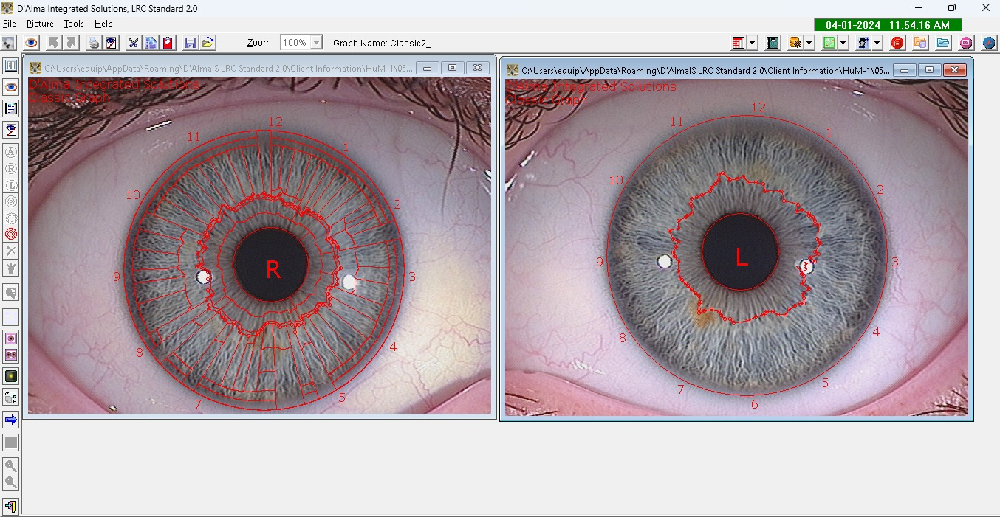
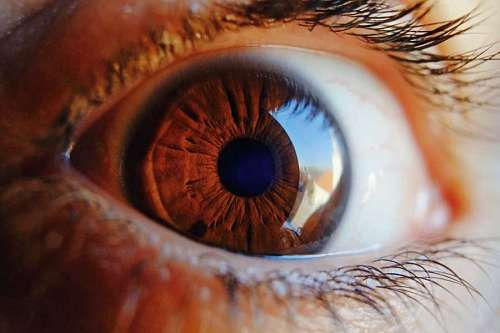
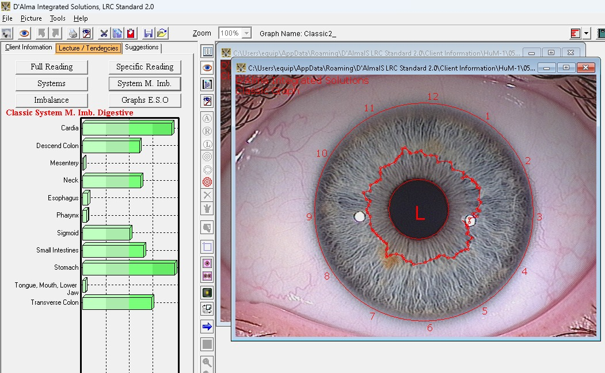
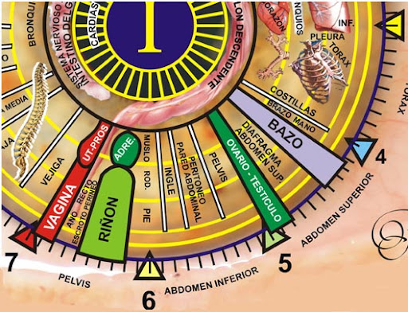
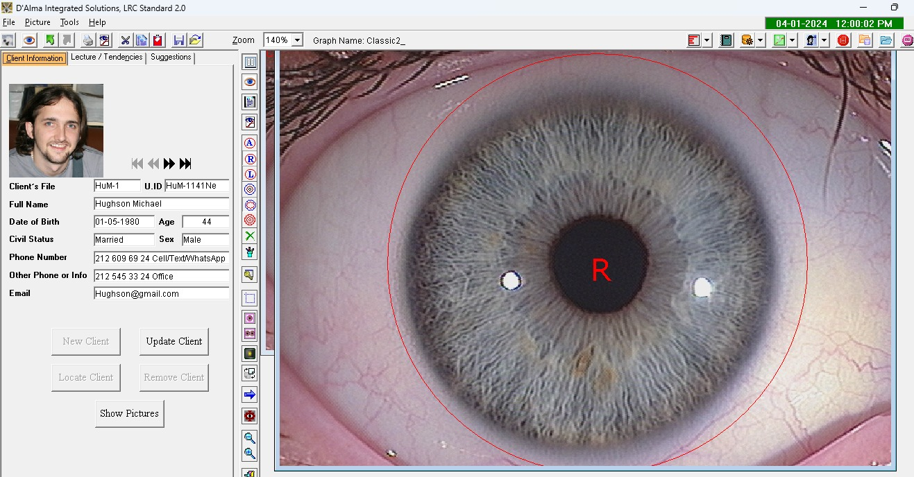
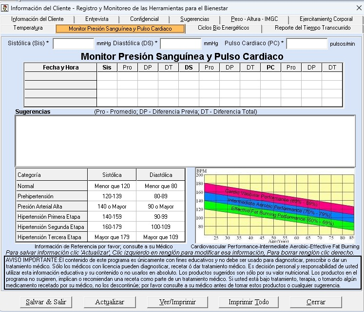

Bienvenido a
La Iridología Clínica Computarizada es una técnica que utiliza tecnología avanzada para analizar los patrones, colores y otras características del iris del ojo. Esta técnica se basa en la idea de que el iris es como un mapa del cuerpo humano, donde cada sector se relaciona con una parte específica del mismo.
Los patrones en el iris pueden variar ampliamente entre individuos. Estos patrones pueden ser líneas radiales, anillos concéntricos, manchas o cualquier otra forma de marcado. Los patrones pueden indicar ciertas condiciones de salud o predisposiciones genéticas.
El color del iris puede variar desde azul claro hasta marrón oscuro. Los cambios de color en ciertas áreas del iris pueden indicar problemas de salud en los órganos o sistemas del cuerpo correspondientes.

Además de los patrones y colores, la Iridología Clínica Computarizada también analiza otras características del iris, como la densidad del tejido, la claridad de los bordes y la presencia de estructuras específicas.

Mediante el uso de un escáner de Iridología Científica, se realiza un examen minucioso del iris. Este escáner puede ampliar las imágenes del iris para un análisis detallado. A través de este análisis, se pueden identificar desequilibrios o problemas de salud en las áreas correspondientes por órganos y sistemas del cuerpo.
La Iridología Clínica Computarizada es una técnica que analiza el iris del ojo para obtener información sobre la salud del cuerpo. Los iridólogos creen que los patrones y colores del iris pueden indicar la salud de diferentes órganos y sistemas del cuerpo, y pueden mostrar problemas médicos pasados o susceptibilidad a ciertas enfermedades.
El iris se puede dividir en zonas, cada una de las cuales se relaciona con una parte específica del cuerpo. Además, la dilatación y constricción del iris juegan un papel clave en la regulación de la cantidad de luz que llega a la retina, lo que puede proporcionar información adicional sobre la salud del cuerpo.

LRC Genesis 2.0 es un software avanzado que realiza análisis precisos del iris del ojo, crea historias clínicas y captura imágenes de alta resolución. Permite monitorear indicadores de bienestar, analizar tendencias corporales y órganos desbalanceados, y ofrece detalles numéricos sobre la salud.
También registra datos como peso, altura, temperatura, presión sanguínea y ciclos bioenergéticos, brindando sugerencias de salud y dietas. Además, genera informes detallados para un análisis exhaustivo de la salud del cliente.
